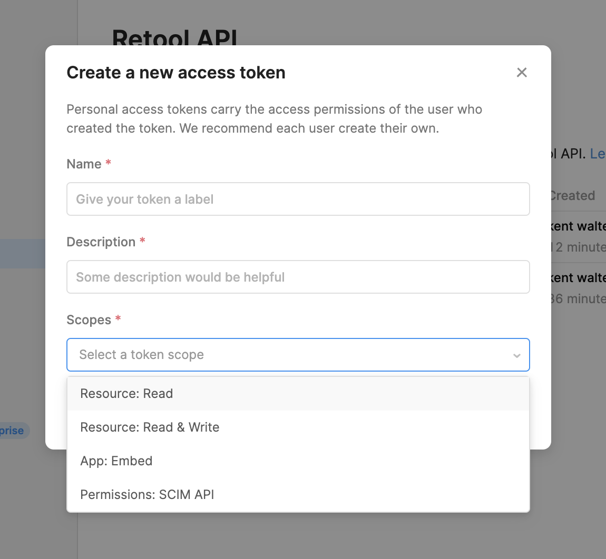

dc exec postgres bash -c "psql -U retool_internal_user -d hammerhead_production"
docker-compose exec postgres pg_dump hammerhead_production --no-acl --no-owner --clean -U retool_internal_user -f retool_dump.sql
scp -i “YOUR_PEM_FILE.pem” YOUR_RETOOL_INSTANCE_URL:/home/ubuntu/retool-onpremise/retool_db_dump.sql ~/dev/retool_db_dump.sql
docker kill $(docker ps -q) && docker rm $(docker ps -a -q) && docker rmi $(docker images -q)
https://help.hcltechsw.com/bigfix/10.0/mcm/MCM/Config/install_docker_ce_docker_compose_on_rhel_8.html
docker-compose.yml
version: '3'
services:
api:
image: tryretool/backend:latest
env_file: ./docker.env
depends_on:
- postgres
command: bash -c "./docker_scripts/wait-for-it.sh postgres:5432; ./docker_scripts/start_api.sh"
ports:
- 4000:3000
postgres:
image: postgres:9.6.5
env_file: ./docker.env
volumes:
- ./.db/retool:/var/lib/postgresql/data
docker.env
## Set node environment to production
NODE_ENV=production
## Set the JWT secret for the API server
JWT_SECRET=YOUR_JWT_SECRET
## Set and generate postgres credentials
POSTGRES_DB=retool
POSTGRES_USER=retool
POSTGRES_HOST=postgres
POSTGRES_PORT=5432
POSTGRES_PASSWORD=retool
## Set key to encrypt and decrypt database passwords, etc.
ENCRYPTION_KEY=DkDeuq/YB7Rdh3MacpxxajRBLu7SW+EmDzANA7Z6W8PuKntBPugqxR+x1LlnsbEB
## License key
LICENSE_KEY=your_key_here
COOKIE_INSECURE=true
const arr = [1,2,3,4,"last item"].map(row => {
return targetQuery.trigger({
additionalScope: {
key1: row
}
});
});
return Promise.all(arr)
// Queries in one batch will run in parallel.
// You can tweak batch size if you see server errors related to
// parallel execution
const arr = _.range(200) //evaluates as [1,2,3,4,5,6,7,8,9,10,11,12,13,14,15,16,17,18,19]
const batchSize = 50
// Note, this is wrapped in a function so that we don't evaluate
// promises immediately, but only when we run them in a batch
const queries = arr.map((item) => () => {
return targetQuery.trigger({
additionalScope: {"key1":item} //passes the value being mapped over as keyName
});
})
async function runAllQueries(queries) {
const batches = _.chunk(queries, batchSize);
const results = [];
while (batches.length) {
const batch = batches.shift();
// This map here actually runs the promise
const result = await Promise.all(batch.map(fn => fn()));
results.push(...result)
}
return results
}
return runAllQueries(queries)
query1.trigger({
additionalScope: {
yourVarName: "someValue"
}
})
API reference here: https://docs.retool.com/reference/api
Need to set this feature flag:Public Resource Developer API (HIDDEN)
Need to create a token with Resources Scopes

RETOOL_HOSTED
RETOOL_ENV
IS_E2E
DATABASE_URL
DATABASE_API_URL
DATABASE_API_BEARER_TOKEN
REDIS_USER_CACHE_HOST
REDIS_USER_CACHE_PORT
REDIS_USER_CACHE_DB
REDIS_USER_CACHE_PASSWORD
REDIS_USER_CACHE_TLS
REDIS_HOST
REDIS_PORT
REDIS_DB
REDIS_PASSWORD
REDIS_TLS
RETOOL_RPC_REDIS_HOST
RETOOL_RPC_REDIS_PORT
RETOOL_RPC_REDIS_DB
RETOOL_RPC_REDIS_PASSWORD
RETOOL_RPC_REDIS_TLS
WORKFLOW_TEMPORAL_OPENTELEMETRY_COLLECTOR
WORKFLOW_WORKER_HEALTHCHECK_PORT
WORKFLOW_CONCURRENT_WEBHOOKS_LIMIT
WORKFLOW_BURST_10_SECOND_LIMIT
GPT_HOURLY_TOKEN_LIMIT
EMBEDDING_DAILY_TOKEN_LIMIT
WORKFLOW_REDIS_HOST
WORKFLOW_REDIS_PORT
WORKFLOW_REDIS_DB
WORKFLOW_REDIS_PASSWORD
WORKFLOW_REDIS_TLS
WORKFLOW_TEMPORAL_CONCURRENT_ACTIVITIES_LIMIT
WORKFLOW_TEMPORAL_CONCURRENT_TASKS_LIMIT
WORKFLOW_TEMPORAL_STICKY_CACHE_SIZE
WORKFLOW_TEMPORAL_CLUSTER_NAMESPACE
WORKFLOW_TEMPORAL_WORKER_SHUTDOWN_GRACE_TIME
WORKFLOW_TEMPORAL_TLS_ENABLED
WORKFLOW_TEMPORAL_TLS_CRT
WORKFLOW_TEMPORAL_TLS_KEY
SENTRY_DSN
SENTRY_DSN_DBCONNECTOR
SENTRY_DSN_JOBS_RUNNER
POSTGRES_DB
POSTGRES_TEST_DB
POSTGRES_USER
POSTGRES_HOST
POSTGRES_PORT
POSTGRES_PASSWORD
POSTGRES_SSL_DISABLED
POSTGRES_SSL_ENABLED
RETOOLDB_POSTGRES_DB
RETOOLDB_POSTGRES_USER
RETOOLDB_POSTGRES_HOST
RETOOLDB_POSTGRES_PORT
RETOOLDB_POSTGRES_PASSWORD
RETOOLDB_POSTGRES_SSL
POSTGRES_SSL_REJECT_UNAUTHORIZED
POSTGRES_CUSTOM_SSL_CERT_PATH
POSTGRES_CUSTOM_SSL_CERT_FILE_NAME
POSTGRES_CUSTOM_SSL_KEY_FILE_NAME
POSTGRES_CUSTOM_SSL_CA_FILE_NAME
POSTGRES_CUSTOM_SSL_CERT_ALTNAME_REGEX
POSTGRES_POOL_SIZE_MIN
POSTGRES_POOL_SIZE_MAX
POSTGRES_STATEMENT_TIMEOUT
POSTGRES_IDLE_IN_TRANSACTION_SESSION_TIMEOUT
RETOOL_EMAIL_HOST
RETOOL_EMAIL_PORT
RETOOL_EMAIL_USERNAME
RETOOL_EMAIL_PASSWORD
SEQUELIZE_ACQUIRE
SEQUELIZE_IDLE
SEQUELIZE_EVICT
SEQUELIZE_MAX_USES
K8S_HOSTED
USE_SHORT_SESSIONS
DISABLE_TEST_RESOURCES
MAIN_DOMAIN
FAILOVER_DOMAIN
LOG_AUDIT_EVENTS
KEEPALIVE_TIMEOUT_MS
HEADERS_TIMEOUT_MS
SAML_FIRST_NAME_ATTRIBUTE
SAML_LAST_NAME_ATTRIBUTE
SAML_GROUPS_ATTRIBUTE
SAML_SYNC_GROUP_CLAIMS
SAML_AUTH_TOKEN
LDAP_SERVER_URL
LDAP_SERVER_NAME
LDAP_SERVER_CERTIFICATE
LDAP_SERVER_KEY
LDAP_BASE_DOMAIN_COMPONENTS
LDAP_SYNC_GROUP_CLAIMS
LDAP_ROLE_MAPPING
LDAP_ROLE_MAPPING_DISABLED
LDAP_SYNC_ALL_GROUPS
BASE_DOMAIN
SCIM_ENABLE_GROUP_PUT
SCIM_AUTH_TOKEN
VERSION_CONTROL_LOCKED
GITHUB_SYNC_TOKEN
DISABLE_GIT_SYNCING
APPS_FS_SYNC_ON
APPS_FS_SYNC_ORG_ID
APPS_FS_SYNC_WATCHER
OKTA_DOMAIN
OKTA_CLIENT_ID
OKTA_CLIENT_SECRET
RESTRICTED_DOMAIN
DISABLE_USER_PASS_LOGIN
INCLUDE_COOKIES_IN_API_CALLS
SAML_IDP_METADATA
SANDBOX_DOMAIN
COMMIT_HASH
BUILD_NUMBER
CUSTOM_OAUTH2_SSO_CLIENT_ID
CUSTOM_OAUTH2_SSO_CLIENT_SECRET
CUSTOM_OAUTH2_SSO_SCOPES
CUSTOM_OAUTH2_SSO_AUTH_URL
CUSTOM_OAUTH2_SSO_TOKEN_URL
CUSTOM_OAUTH2_SSO_USERINFO_URL
CUSTOM_OAUTH2_SSO_AUDIENCE
CUSTOM_OAUTH2_SSO_JWT_EMAIL_KEY
CUSTOM_OAUTH2_SSO_JWT_FIRST_NAME_KEY
CUSTOM_OAUTH2_SSO_JWT_LAST_NAME_KEY
CUSTOM_OAUTH2_SSO_JWT_ROLES_KEY
CUSTOM_OAUTH2_SSO_ROLE_MAPPING_DISABLED
CUSTOM_OAUTH2_SSO_INCLUDE_BASIC_AUTH_IN_HEADERS
HTML_ESCAPE_RETOOL_EXPRESSIONS
CUSTOM_RETOOL_SANDBOX_RESTRICTIONS
DISABLE_MEMORY_AND_CPU_USAGE_LOGGING
CUSTOM_API_KEY
DEBUG
LOG_LEVEL
HIDE_PROD_AND_STAGING_TOGGLES
HEADER_BASED_AUTH_ENABLED
HEADER_BASED_AUTH_EMAIL_HEADER
HEADER_BASED_AUTH_USERNAME_HEADER
HEADER_BASED_AUTH_ROLES_HEADER
HEADER_BASED_AUTH_METADATA_MAPPING
HEADER_BASED_AUTH_ROLE_MAPPING
HEADER_BASED_AUTH_ROLE_MAPPING_DISABLED
FORWARDABLE_SAME_DOMAIN_COOKIES_ALLOWLIST
DISABLE_FORWARDABLE_COOKIE_DECODING
ENABLE_CLIENT_SIDE_CUSTOM_AUTH_BROWSER_CALLS
CUSTOM_LOGOUT_REDIRECT
TRIGGER_OAUTH_2_SSO_LOGIN_AUTOMATICALLY
TRIGGER_SAML_LOGIN_AUTOMATICALLY
GITHUB_APP_ID
GITHUB_APP_INSTALLATION_ID
GITHUB_APP_PRIVATE_KEY
GITHUB_PERSONAL_ACCESS_TOKEN
GITLAB_URL
GITLAB_PROJECT_ACCESS_TOKEN
GITLAB_PROJECT_ID
GITLAB_MAIN_BRANCH
GITLAB_ORGANIZATION_NAME
GITLAB_REPOSITORY_NAME
GITLAB_PROJECT_SLUG
DISABLE_PROTECTED_APPS_SYNCING
DISABLE_SOURCE_CONTROL_SYNCING
ENABLE_CUSTOM_PLATFORM_LEVEL_AUTH_STEPS
HIDE_ALL_HEADERS_IN_AUDIT_LOG_EVENTS
TRUNCATE_LONG_AUDIT_LOG_DATA
OTEL_TRACING_ENABLED
OTEL_COLLECTOR_URL
SAMPLE_DATABASES_SERVER_URL
SAMPLE_DATABASES_API_BEARER_TOKEN
CUSTOM_OAUTH2_SSO_ACCESS_TOKEN_LIFESPAN_MINUTES
DISABLE_RATE_LIMIT
AUTH_REQS_PER_MINUTE
INVITES_PER_DAY
ENABLE_RUN_QUERY_BY_UUID_METADATA_LOG
FAILED_MONTHLY_LOGINS_PER_IP
FAILED_MONTHLY_LOGINS_PER_USER
DBCONNECTOR_QUERY_TIMEOUT_MS
DBCONNECTOR_EXTENDED_QUERY_TIMEOUT_MS
DBCONNECTOR_EXTENDED_QUERY_TIMEOUT_ENABLED_RESOURCES
DBCONNECTOR_KEEPALIVE_TIMEOUT_MS
DBCONNECTOR_HEADERS_TIMEOUT_MS
DBCONNECTOR_MEMORY_LIMIT_PERCENT
DBCONNECTOR_HTTP_AGENT_MAX_SOCKETS
RETOOL_MAX_MEMORY_MB
DBCONNECTOR_FIREBASE_MEMORY_LIMIT_MB
DBCONNECTOR_FIREBASE_WORKER_ENDURANCE
ENABLE_DBCONNECTOR_FIREBASE_PROCESS_LIMIT
DBCONNECTOR_INGRESS_PREFIX
DBCONNECTOR_INGRESS_DOMAIN
DBCONNECTOR_INGRESS_DOMAIN_SECONDARY
DBCONNECTOR_AUTH
USE_DBCONNECTOR_INGRESS_FOR_PRIMARY
USE_DBCONNECTOR_INGRESS_FOR_SECONDARY
DBCONNECTOR_NUM_WORKERS
DBCONNECTOR_SHARDING_DOMAIN
DBCONNECTOR_SHARDING_TIME_PERIOD_IN_SECONDS
DBCONNECTOR_SHARDING_TTL
DBCONNECTOR_SHARDING_JITTER_THRESHOLD
DBCONNECTOR_SHARDING_MIN_JITTER
DBCONNECTOR_SHARDING_MAX_JITTER
DBCONNECTOR_SHARDING_OLD_WINDOW_WEIGHT
DBCONNECTOR_SHARDING_RESOURCE_TYPES
DBCONNECTOR_CPU_PROFILING_TIME_MS
DBCONNECTOR_AWS_ROLE_ASSUMER_WITH_WEB_IDENTITY
DBCONNECTOR_AWS_ENABLE_DEFAULT_PROVIDER_ATHENA
DBCONNECTOR_AWS_ENABLE_DEFAULT_PROVIDER_DYNAMODB
DBCONNECTOR_AWS_ENABLE_DEFAULT_PROVIDER_LAMBDA
DBCONNECTOR_AWS_ENABLE_DEFAULT_PROVIDER_S3
DBCONNECTOR_DOMAIN_US_WEST_2
DBCONNECTOR_DOMAIN_EU_CENTRAL_1
DBCONNECTOR_MONGODB_ENABLE_STREAMING_ONPREM
CODE_EXECUTOR_INGRESS_DOMAIN
JWT_SECRET
CLIENT_ID
CLIENT_SECRET
GOOGLE_CLIENT_SECRET
GOOGLE_API_KEY
GITHUB_CLIENT_ID
GITHUB_CLIENT_SECRET
DISABLE_PUBLIC_PAGES
DISABLE_IMAGE_PROXY
DISABLE_INTERCOM
DISABLE_DATABASE_MIGRATIONS
DATABASE_MIGRATIONS_TIMEOUT_SECONDS
DISABLE_DATABASE_MIGRATIONS_TIMEOUT
ENABLE_DATABASE_MIGRATIONS_CONCURRENT_INDEX_CREATION
AUDIT_INSERT_TIMEOUT_SECONDS
AUDIT_SELECT_TIMEOUT_SECONDS
AUDIT_TRAILS_FILTER_DEFAULT_DAYS
USE_STAGING_LICENSING_SERVER
LICENSING_SERVER_ENV
PROTECTED_APPS_TREE_TRIMMING
PROTECTED_APPS_TREE_TRIMMING_CHUNK_SIZE
PRESERVE_PASSWORDS_FIRST_GOOGLE_LOGIN
DISABLE_PAGE_USER_HEARTBEAT
ENABLE_GLOBAL_QUERY_TIMEOUT
SCIM_LOG_FULL_REQUESTS
NODE_METRICS_SECRET
NODE_METRICS_MONTIOR_MINUTE_INTERVAL
NODE_METRICS_MONTIOR_ENABLED
NODE_HTTP_AGENT_MAX_SOCKETS
REST_API_MIME_TO_EXTENSION_PARSING_ENABLED
CONTENT_TYPE_PARSING_REST_API_ENABLED
APPLE_SIWA_KEY
APPLE_SIWA_DEVELOPMENT_KEY
USE_GCM_ENCRYPTION
BOOTSTRAP_FROM_SOURCE
BOOTSTRAP_USER
BOOTSTRAP_GITHUB_ORGANIZATION_NAME
BOOTSTRAP_GITHUB_REPOSITORY_NAME
BOOTSTRAP_GITHUB_MAIN_BRANCH
ENCRYPTION_KEY
LICENSE_KEY
USE_REDIS_HEARTBEATS
CODE_COMMIT_AWS_ACCESS_KEY_ID
CODE_COMMIT_AWS_SECRET_ACCESS_KEY
CODE_COMMIT_AWS_DEFAULT_REGION
CODE_COMMIT_REPOSITORY_NAME
CODE_COMMIT_MAIN_BRANCH
CODE_COMMIT_HTTPS_USERNAME
CODE_COMMIT_HTTPS_PASSWORD
AIRTABLE_API_KEY
ACTIVE_PAGE_SAVE_PROCESSOR_QUEUE
AZURE_QUEUE_STORAGE_CONNECTION_STRING
DATABASE_SCHEMA_QUERY_LIMIT
SNS_TOPIC_ARN
SNS_TOPIC_REGION
DB_CONNECTOR_PORT
DOMAINS
HTTP_PROXY
HTTP_PROXY_STRICT
NO_PROXY
INTERCOM_IDENTITY_VERIFICATION_SECRET_KEY
JDBC_DIRECTORY_PATH
K8S_DEPLOYMENT
K8S_IMAGE
K8S_NODE_IP
K8S_NODE_NAME
K8S_POD_IP
K8S_POD_NAME
LICENSING_POSTGRES_HOST
LICENSING_POSTGRES_PASSWORD
LICENSING_POSTGRES_PORT
LICENSING_POSTGRES_USER
LIST_ENDPOINTS_SECRET
MAILGUN_API_KEY
MAILGUN_DOMAIN
MAILGUN_FROM_EMAIL
MAILGUN_REPLY_TO
EMAIL_SENDER_HOST
HIBP_API_KEY
NEW_RELIC_LICENSE_KEY
NODE_ENV
NODE_EXTRA_CA_CERTS
OFFLINE_LICENSE_KEY
PORT
BACKEND_API_PORT
PRESTO_POOL_MAX_CONNECTION_RETRIES
PRESTO_POOL_MAX_SIZE
PRESTO_POOL_MIN_SIZE
PRESTO_DISABLE_GET_SCHEMA
PRESTO_DISABLE_QUERY_TIMEOUT
GRPC_MAX_RETRIES
OPEN_API_SPEC_CACHE_TTL_MS
DBCONNECTOR_POSTGRES_POOL_MAX_SIZE
PROTO_DIRECTORY_PATH
PROTO_IMPORT_DIRECTORY_PATH
RETOOL_SLACK_CONNECTED_APP_CLIENT_ID
RETOOL_SLACK_CONNECTED_APP_CLIENT_SECRET
RETOOL_MICROSOFT_CONNECTED_APP_CLIENT_ID
RETOOL_MICROSOFT_CONNECTED_APP_CLIENT_SECRET
RETOOL_ASANA_CONNECTED_APP_CLIENT_ID
RETOOL_ASANA_CONNECTED_APP_CLIENT_SECRET
RETOOL_AZURE_STORAGE_CONNECTION_STRING
RETOOL_FRONT_CONNECTED_APP_CLIENT_ID
RETOOL_FRONT_CONNECTED_APP_CLIENT_SECRET
RETOOL_EMAIL_HOURLY_LIMIT
RETOOL_SALESFORCE_CONNECTED_APP_CLIENT_ID
RETOOL_SALESFORCE_CONNECTED_APP_CLIENT_SECRET
RETOOL_WORKFLOW_IN_SANDBOX
RETOOL_WORKFLOW_ON_PREM_LOG_TO_CLOUDWATCH
SAMLIFY_DRIFT_TOLERANCE_FUTURE
SAMLIFY_DRIFT_TOLERANCE_PAST
SAML_SP_ENTITY_ID
SANDBOX_LAMBDA_API_KEY
SLACK_API_TOKEN
SNOWFLAKE_POOL_ACQUIRE_TIMEOUT_MS
SNOWFLAKE_POOL_MAX_SIZE
SNOWFLAKE_POOL_MAX_TRIES
SNOWFLAKE_POOL_MIN_SIZE
SNOWFLAKE_VALIDATION_DISABLE_HEARTBEAT
STATSD_HOST
STATSD_PORT
STATSD_PROTOCOL
STATSD_SOCKET_PATH
STRIPE_SECRET_KEY
STRIPE_WEBHOOK_SECRET
VERSION_NUMBER
WORKFLOW_BACKEND_HOST
WORKFLOW_LAMBDA_FUNCTION_NAME
WORKFLOW_LAMBDA_INVOKE_ACCESS_KEY_ID
WORKFLOW_LAMBDA_INVOKE_SECRET_ACCESS_KEY
WORKFLOW_LAMBDA_REGION
WORKFLOW_LOAD_TEST_CACHE_SIZE
WORKFLOW_TEMPORAL_LAMBDA_FUNCTION_NAME
WORKFLOW_TEMPORAL_LAMBDA_INVOKE_ACCESS_KEY_ID
WORKFLOW_TEMPORAL_LAMBDA_INVOKE_SECRET_ACCESS_KEY
WORKFLOW_TEMPORAL_LAMBDA_REGION
WORKFLOW_LOGGING_ACCESS_KEY_ID
WORKFLOW_LOGGING_GROUP_NAME
WORKFLOW_LOGGING_REGION
WORKFLOW_LOGGING_SECRET_ACCESS_KEY
WORKFLOW_S3_ACCESS_KEY_ID
WORKFLOW_S3_REGION
WORKFLOW_S3_BUCKET
WORKFLOW_S3_SECRET_ACCESS_KEY
WORKFLOW_SCHEDULING_ENABLED
WORKFLOW_TEMPORAL_CLUSTER_FRONTEND_HOST
WORKFLOW_TEMPORAL_CLUSTER_FRONTEND_PORT
WORKFLOW_BLOCK_STORAGE_LOCATION
WORKFLOW_DEV_FORCE_USE_CLOUD_EXECUTION_PATH
WORKFLOW_LOAD_TEST_CACHE_SIZE
LICENSING_STATUS_PROPAGATION_ENABLED
REQUIRE_PASSWORD_TO_DISABLE_MFA
http_proxy
USE_AUDIT_TRAILS_POSTGRES_DB
AUDIT_TRAILS_POSTGRES_HOST
AUDIT_TRAILS_POSTGRES_DB
AUDIT_TRAILS_POSTGRES_USER
AUDIT_TRAILS_POSTGRES_PORT
AUDIT_TRAILS_POSTGRES_PASSWORD
NUM_WORKERS
IS_ADMIN
BITBUCKET_USER
BITBUCKET_APP_PASSWORD
BITBUCKET_MAIN_BRANCH
BITBUCKET_WORKSPACE
BITBUCKET_REPO
BITBUCKET_ENTERPRISE_URL
BITBUCKET_ENTERPRISE_API_URL
AZURE_REPOS_USER
AZURE_REPOS_PERSONAL_ACCESS_TOKEN
AZURE_REPOS_MAIN_BRANCH
AZURE_REPOS_ORGANIZATION
AZURE_REPOS_PROJECT
AZURE_REPOS_REPO
AZURE_REPOS_URL
INC_613_GET_RECORD_TRANSIT
OPENAI_SECRET_KEY
OPENAI_API_BASE_URL
ACCESS_TOKEN_COOKIE_NAME
OPENAI_PROXY_HOST
OPENAI_PROXY_API_TOKEN
MOBILE_PUSH_NOTIFIER_HOST
MOBILE_PUSH_NOTIFIER_API_TOKEN
MOBILE_PUSH_NOTIFIER_APNS_SANDBOX_APP_ID
MOBILE_PUSH_NOTIFIER_APNS_APP_ID
MOBILE_PUSH_NOTIFIER_FCM_APP_ID
CUSTOM_OAUTH2_SSO_NO_SCOPE_IN_AUTHORIZATION_CODE_REQ
CUSTOM_DOMAINS_BUILDKITE_API_TOKEN
RETOOL_CACHE_FEATURE_FLAGS_IN_REDIS
RETOOL_USE_FEATURE_FLAGS_DEFAULT_VALUE_FROM_CONFIG
CUSTOM_SPECS_DOMAIN
MARKETPLACE_S3_ACCESS_KEY_ID
MARKETPLACE_S3_SECRET_ACCESS_KEY
RETOOL_STORAGE_S3_BUCKET
RETOOL_STORAGE_S3_ACCESS_KEY_ID
RETOOL_STORAGE_S3_SECRET_ACCESS_KEY
FIRESTORE_TIMESTAMP_STANDARDIZATION
RETOOL_SDK_QUERY_DEFAULT_TIMEOUT_MS
RETOOL_SDK_QUERY_CACHE_TTL_MS